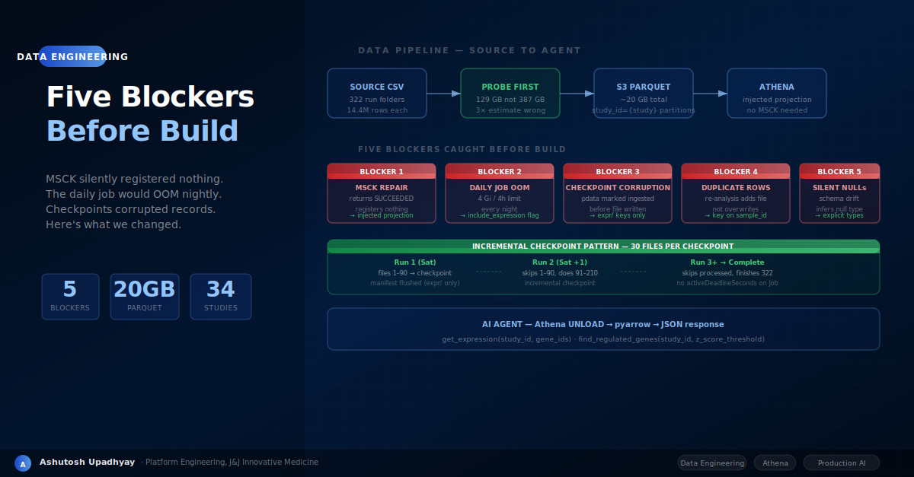

We had a design. The advisor caught five blockers before a single line was written. Here's what changed and why it mattered.
The source data was clear. Thirty-four compound-screening studies. Three hundred twenty-two run folders. A clean long-format CSV schema: gene_id, SampleName, raw, logcpm, nnZScore, ZScore, dateCreated. We had estimated the total volume at 387 GB — 322 files, 1.2 GB average. We had a storage design using Hive-partitioned Parquet on S3, a weekly CronJob with 16 Gi memory, an Athena table with partition discovery, and a two-action API for the AI agent to query expression values and find regulated genes.
Before writing a single line of code, we submitted the design to a review agent — an architectural advisor that reads the codebase, checks live AWS state, and looks for blockers. It came back with five of them.
None of the five were subtle. Each would have caused silent data corruption, nightly OOM kills, or an Athena table that looked healthy but returned no rows. This post walks through what the advisor found, why each mistake was non-obvious at design time, and what the fixes looked like.
Our 387 GB estimate came from a simple calculation: 322 files × 1.2 GB average file size, where 1.2 GB was the size of one file we had examined. The advisor flagged this. It couldn't verify the number because the S3 bucket required pod credentials it didn't have.
So we probed. From a running pod, we listed the first five sample folders of two studies and retrieved the file sizes for each *_data.csv:
STUDY-A / sample-01: data.csv 1,213,259,101 bytes (260 samples)
STUDY-A / sample-02: data.csv 200,153,324 bytes ( 72 samples)
STUDY-A / sample-03: data.csv 335,569,971 bytes (120 samples)
STUDY-A / sample-04: data.csv 180,478,152 bytes ( ~60 samples)
STUDY-A / sample-05: data.csv 204,460,190 bytes ( ~70 samples)File sizes varied dramatically — proportional to sample count, not study. The 1.2 GB file we had used as the baseline had 260 samples. Most runs had 60–120 samples, making the average closer to 400 MB. The real total: approximately 129 GB CSV, not 387 GB.
The probe-first principle: Before sizing memory, deadlines, or cost models for a new data source, spend 10 minutes running ranged GetObject requests against a representative sample. One S3 API call prevented three weeks of over-engineered infrastructure. Our 16 Gi pod limit stayed, but the 18-hour deadline estimate dropped to a realistic 3–4 Saturday runs via incremental checkpointing.
The probe also confirmed something critical about the data structure: each CSV contained only the samples for that specific run folder — it was not a full-study eset replicated per folder. This changed the deduplication design entirely, as we'll see in Blocker 4.
Our design called for running MSCK REPAIR TABLE after each weekly ingest to register new partitions with AWS Glue. The advisor checked the IAM policy on the pod role and found this statement:
"Action": [
"glue:GetDatabase",
"glue:GetTable",
"glue:GetPartitions",
"glue:GetPartition",
"glue:BatchGetPartition",
"glue:UpdateTable"
]Missing: glue:BatchCreatePartition and glue:CreatePartition.
AWS documentation confirms what makes this particularly nasty: MSCK REPAIR TABLE can return SUCCEEDED while registering zero new partitions. There's an entire AWS troubleshooting page titled "MSCK REPAIR TABLE detects partitions but doesn't add them to AWS Glue." The query runs, reports success, and your new data is completely invisible to Athena. No error. No warning.
The silent failure mode: Adding glue:BatchCreatePartition to the policy would fix the permission gap — but Athena's own performance documentation recommends avoiding MSCK REPAIR for partition maintenance entirely. It scans S3 for new prefixes, which becomes expensive as data grows.
The fix was already demonstrated in the same codebase by the dose-response table: projection.protein_prefix.type=injected. (The sibling de_results table uses a different pattern — projection.compound_bucket.type=integer — because its partition key is numeric and benefits from range projection rather than injected.)
Injected partition projection requires zero catalog writes. Athena derives the partition path from the query predicate at query time. No MSCK. No BatchCreatePartition. No IAM change. The only requirement is that every query must supply a WHERE study_id = '...' filter — which both agent actions do by design.
# Glue table creation — injected projection
aws glue create-table \
--database-name omicsagent_transcriptomics \
--table-input '{
"Name": "expression_data",
"Parameters": {
"projection.enabled": "true",
"projection.study_id.type": "injected",
"storage.location.template":
"s3://bucket/omicsagent/data/transcriptomics_bulk/expression/study_id=${study_id}"
},
"PartitionKeys": [{"Name": "study_id", "Type": "string"}],
...
}'The new expression ingestion code was added inside _ingest_transcriptomics_bulk(). The function was already called by two CronJobs:
Both CronJobs called the same function. The new expression loop had no gating condition. The moment the v22.01 image deployed, the daily 4 Gi job would attempt to load 1.2 GB CSV files into memory, OOM-kill on the first large file, and retry until it hit the backoff limit. This would happen every night, noisily, while appearing to be an expression ingestion failure when it was actually a design error.
The fix was a function parameter with a safe default:
def _ingest_transcriptomics_bulk(
s3: S3DataLakeClient,
include_expression: bool = False, # B2 fix: daily 4Gi job uses default False
) -> tuple[int, list[str]]:
...
if include_expression:
for sample_prefix in sample_prefixes:
# read 200MB–1.2GB CSV, convert to Parquet, write to S3
...The weekly expression CronJob passes include_expression=True explicitly. The daily job passes nothing and stays at 4 Gi with metadata-only work. Two CronJobs, one function, one parameter separating a stable daily job from a multi-hour heavy ingest.
To handle the multi-run nature of the backfill (322 files across several Saturdays), we added a periodic checkpoint: flush the S3 JSON manifest every 30 expression files so the next run can skip already-processed ones.
The manifest stores ingested runs as a dict of keys. For pdata/fdata, the key is {study_id}/{sample_id}/{run_folder}. For expression, we used expr/{study_id}/{sample_id}.
The checkpoint flushed new_run_records — which by that point contained both pdata keys from the current run's metadata loop AND expression keys from the expression loop. Pdata keys were being written to the manifest before all_pdata.parquet had been written to S3.
The data loss scenario: Pod processes 30 expression files → checkpoint fires → pdata keys for samples from earlier in the loop are now in the manifest → pod dies (OOM, node drain, deadline) → next run hits if run_key in ingested_runs: continue for those pdata rows → they are permanently skipped → those samples never appear in all_pdata.parquet → the agent's metadata queries silently return incomplete data forever.
# B3 fix: checkpoint only expr/ keys
# pdata keys must not be marked ingested before all_pdata.parquet is written
if len(expr_files_written) % expr_checkpoint_every == 0:
expr_only = {
k: v for k, v in new_run_records.items()
if k.startswith("expr/") # ← this filter is the fix
}
s3.upsert_manifest(
"transcriptomics_bulk",
expr_files_written,
0,
time.time() - ingest_start,
downloaded_filenames=expr_only,
)The full new_run_records dict (including pdata keys) is only flushed at the very end of the function, after all_pdata.parquet has been successfully written.
The expression data is versioned. Each sample folder can contain multiple run folders — timestamped re-analyses with updated annotation versions. Our design stated "only ingest the latest run per sample," and the code correctly selected max(run_prefixes) as the run to process.
But the S3 object key was {sample_id}__{run_folder}.parquet.
When a sample gets a new annotation version, the new run_folder is different. The new Parquet object has a different key. The old one is still there. Athena's expression_data table now has two Parquet files in the same study_id= partition, both for the same sample. get_expression and find_regulated_genes return duplicate rows — same gene, same sample, two different Z-scores from two different annotation versions.
# Wrong: run_folder in key means re-analysis adds a second file
expr_s3_key = f"{prefix}/study_id={study_id}/{sample_id}__{run_folder}.parquet"
# B4 fix: key on sample_id only — PUT is idempotent, re-analysis overwrites
expr_s3_key = f"{prefix}/study_id={study_id}/{sample_id}.parquet"S3's put_object overwrites unconditionally. Keying on sample_id makes every re-analysis overwrite the S3 object. The run_folder value is still preserved as a column inside the Parquet file for provenance, but it no longer participates in the S3 key.
Note on incremental runs: The manifest key (expr/{study_id}/{sample_id}) has no run_folder component, so the incremental skip fires before the S3 write on subsequent runs. Re-ingesting a newer annotation version currently requires clearing the manifest entry for that sample. We've logged this as a backlog item to key the manifest on expr/{study}/{sample}/{run_folder}.
The CSV schema had seven columns, two of which — nnZScore and ZScore — were nullable. In our initial design, we used pyarrow's default type inference. For most files this was fine. For any file where a Z-score column was entirely empty (all blank values), pyarrow inferred the column type as null — a special type meaning "no values, no schema."
When Athena reads a Parquet partition containing a null-typed column where the Glue schema declares double, the behavior is undocumented and version-dependent: it either raises HIVE_BAD_DATA or silently returns NULLs. Either way, find_regulated_genes filters on z_score IS NOT NULL AND ABS(z_score) >= threshold — those samples simply never appear in results. The fix is the same regardless of which failure mode your version of Athena produces.
# B5 fix: explicit column_types for all 7 source columns
expr_tbl = pcsv.read_csv(
io.BytesIO(body_bytes),
convert_options=pcsv.ConvertOptions(
column_types={
"gene_id": pa.string(),
"SampleName": pa.string(),
"raw": pa.int64(),
"logcpm": pa.float64(),
"nnZScore": pa.float64(), # nullable — but typed, not inferred
"ZScore": pa.float64(), # nullable — but typed, not inferred
"dateCreated": pa.string(),
},
# WARNING: null_values REPLACES pyarrow defaults, not extends them.
# Add any default null strings you need (n/a, #N/A N/A, 1.#IND, etc.)
# or use strings_can_be_null=True to cover lowercase variants.
null_values=["", "NA", "NaN", "null", "NULL", "N/A", "n/a", "#N/A", "#N/A N/A", "-", "nan"],
strings_can_be_null=True,
),
)With explicit column_types, pyarrow honors the declared type even when all values in the column are blank — producing a float64 array of nulls, which is correctly typed and readable by Athena. We also added a post-rename validation that skips any file missing required columns, logging an error rather than writing corrupted Parquet silently.
With the five blockers resolved, the remaining design question was execution time. At approximately 200 seconds per file (reading 200MB–1.2GB CSV, converting to Parquet, writing to S3), 322 files takes 18 hours. The weekly CronJob had an 8-hour deadline. A single run cannot complete the backfill.
The solution was already implied by the checkpoint fix: let the backfill run incrementally across multiple executions. The manifest records which files have been processed. Each run skips completed files and processes the next batch until the deadline approaches. The backfill Job (a one-shot Kubernetes Job for the initial load) has no activeDeadlineSeconds — it runs to completion across restarts, with backoffLimit: 3. The weekly CronJob continues the steady-state incremental updates.
apiVersion: batch/v1
kind: Job
metadata:
name: omicsagent-expression-backfill
spec:
backoffLimit: 3
# No activeDeadlineSeconds — checkpointing allows safe partial runs
template:
spec:
restartPolicy: Never
containers:
- command:
- python
- -c
- |
from omicsagent.agents.data_ingestion_agent import _ingest_transcriptomics_bulk
_ingest_transcriptomics_bulk(s3, include_expression=True)Checkpoint every N files, not at the end: A function that writes 322 files and flushes its manifest once at the end loses all progress on any failure. Checkpointing every 30 files means a pod killed at hour 7 restarts from file 210, not from file 1. The cost is minimal — an S3 JSON read-modify-write every 30 iterations — and the recovery benefit is compounding.
All five blockers shared a common root cause: the design was written from intent, not from observation. We knew what the system should do. We hadn't verified what it would actually do against the live AWS environment, the real data dimensions, and the existing IAM grants.
The MSCK failure required checking the IAM policy against the AWS API documentation — not something most developers do for a standard table operation. The daily OOM required knowing that two CronJobs shared the same function. The checkpoint corruption required tracing the exact execution order of two loops within one function. The duplicate rows required understanding how S3 put_object differs from upsert. The silent NULLs required knowing pyarrow's type inference behavior for empty columns.
None of these are exotic failure modes. They're exactly the kind of second-order effects that a thorough review finds — and that production incidents teach, expensively, after the fact.
| Blocker | Category | Silent? | Fix |
|---|---|---|---|
| MSCK REPAIR registers nothing | IAM / AWS behavior | Yes — returns SUCCEEDED | Injected partition projection |
| Daily CronJob OOM nightly | Resource misconfiguration | No — OOMKill visible | include_expression=False default |
| Checkpoint corrupts pdata | Execution ordering | Yes — data lost permanently | Checkpoint only expr/ keys |
| Re-analysis duplicates rows | S3 key design | Yes — Athena returns doubles | Key on sample_id.parquet |
| Schema drift produces NULLs | Type inference | Yes — queries return no rows | Explicit column_types |
Blockers 1, 3, 4, and 5 all would have been silent in production. The system would have appeared to work — CronJobs completing successfully, Athena queries returning results — while actually delivering incomplete, duplicate, or NULL data to the AI agent. The only sign would have been a researcher noticing that gene expression queries returned fewer results than expected, which might take weeks to surface and be correctly attributed.
Pre-build review found all five in under an hour.
glue:BatchCreatePartition, consider injected or enum partition projection instead — zero catalog writes, no IAM gap.null for empty columns. One file with an empty Z-score column and no explicit type declaration will silently corrupt that partition's analytics forever.